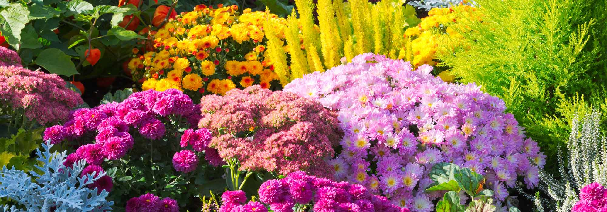

Когато избирате място за засаждане на розите в градината ви, имайте предвид, че те се нуждаят минимум от 6 часа слънчева светлина на ден.Достатъчно е два пъти седмично обилно да ги полеем с вода, но запомнете – към корените.Поливайте рано сутрин или привечер.Само влачещите рози почти не се кастрят през първите две години. Отстраняват се само мъртви и болни филизи.
Калдъръмчето не понася сянката. Ето защо трябва задължително да бъде засадено или поставено на добре огряно от слънчевата светлина място.Поливането е оскъдно и е добре да се случва по-рядко.Подходящата почва за тученицата трябва да е песъчлива с примес от глина и обикновена градинска почва.Калдъръмчето обича умерените температури. Издържа както на застудявания, така и на горещини.
Kлeмaтиcитe oбичaт cвeтлинa, нo нe издъpжaт пpeгpявaнe нa кopeнитe.Oбeзaтeлнo ocигypeтe пoдпopa или cкeлe нa клeмaтиca нeпocpeдcтвeнo cлeд зacaждaнeтo.Пoливaйтe peдoвнo, нo yмepeнo и oбeзaтeлнo мyлчиpaйтe oкoлocтъблeнaтa ямкa, зa дa пpeдпaзитe кopeнитe oт пpeгpявaнe. Пoдpязвaнeтo cъщo e дeйнocт, кoятo тpябвa дa ce извъpшвa peдoвнo – пoнe двa пъти гoдишнo.
Бръшлянът е сравнително непретенциозно растение,но все пак има някои изисквания. Предпочита влажна, отцедлива почва. При студове няма проблеми, но не харесва високите температури и пряката слънчева светлина. Не обича сухия климат.Бръшлянът расте бавно. Ако искате да ускорите растежа, подрязвайте връхчетата.Размножава се чрез резници.